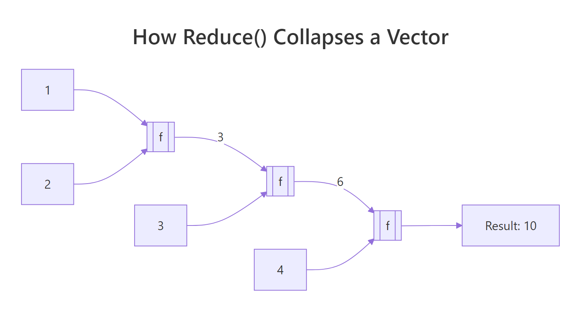
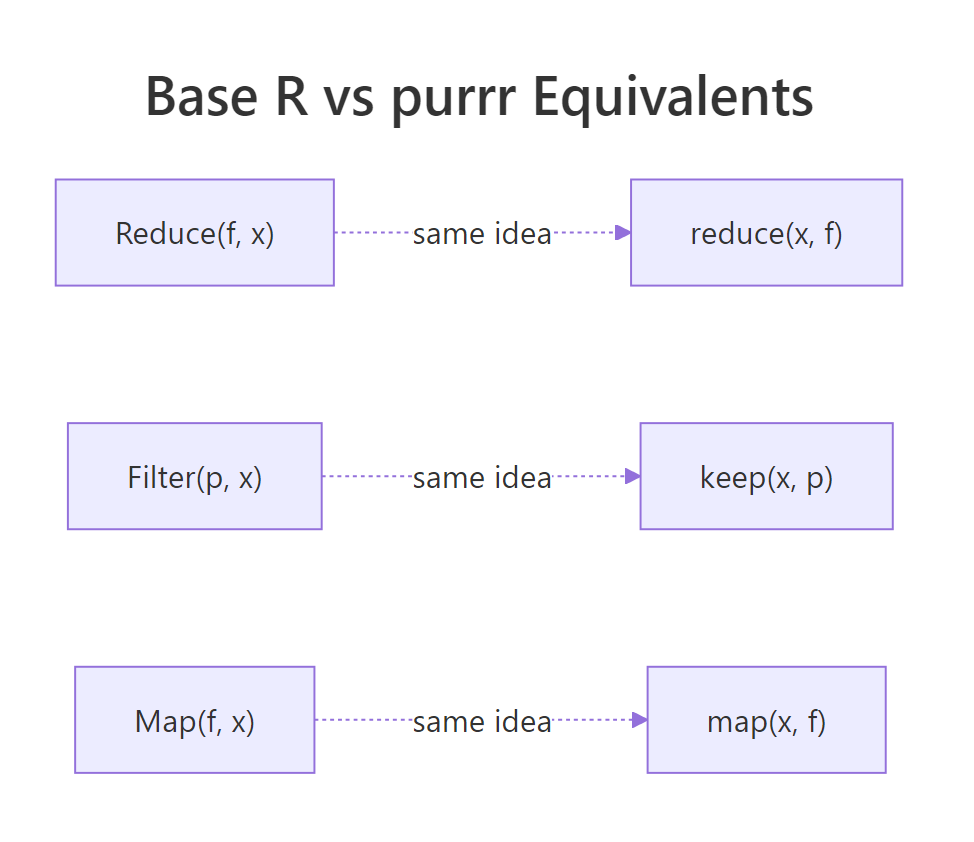
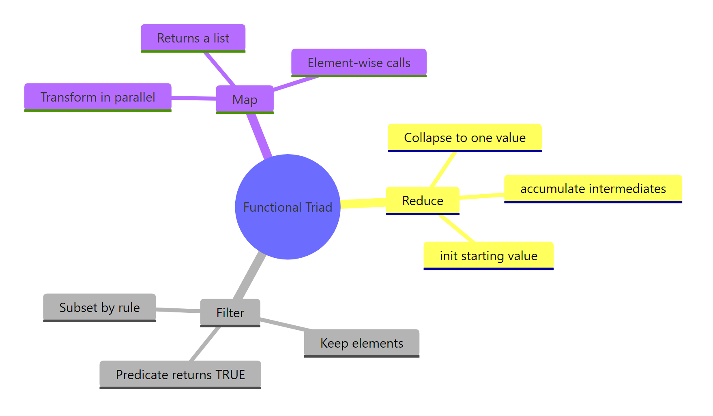

Base R's Functional Triad: Reduce(), Filter(), Map(), Without purrr
R has three dependency-free higher-order functions, Reduce(), Filter(), and Map(), that handle the core patterns of functional programming without loading a single package.
Why use Reduce(), Filter(), Map() when purrr exists?
You've probably seen purrr's map(), keep(), and reduce() in tutorials. Base R ships with the same ideas, spelled Map(), Filter(), and Reduce(), and they work on a fresh R install with zero packages loaded. When you're writing a utility script, authoring a package that wants minimal dependencies, or teaching the language, the base versions pull their weight. Here's what the triad actually does, shown on one tiny vector so you can see all three at once.
We'll apply each function to the same input nums <- 1:5 so the difference in what they produce is obvious from the output.
Three functions, three distinct shapes of result. Reduce gave back one number, Filter gave back a shorter vector of the same type, and Map gave back a list, even though the input was a plain vector. That list-output from Map is the first surprise most learners hit; we'll unpack it in its own section below.
Try it: Given the vector ex_nums <- c(2, 4, 6, 8), call all three functions: Reduce with "+", Filter keeping values greater than 4, and Map doubling each value.
Click to reveal solution
Explanation: Each function takes the same input but returns a different shape, scalar, vector, list.
How does Reduce() collapse a list into one value?
Reduce takes a two-argument function and threads it across your vector, carrying the running result forward. Calling Reduce("+", 1:4) is the same as writing ((1 + 2) + 3) + 4. The function folds the input one step at a time until only a single value remains.

Figure 1: Reduce() threads a running result through every element of the vector.
Let's see the sum version spelled out, then push the same pattern to something less obvious.
That single line does the work of a for-loop with an accumulator. Reduce called + on 1 and 2, got 3, then called + on 3 and 3, got 6, then called + on 6 and 4, got 10. The same machinery works for any two-argument function, including ones that don't look like math.
Here Reduce folded paste across the letters, building up "a b", then "a b c", then "a b c d". Notice we never wrote a loop or tracked an index, the sequencing is implicit.
The real-world payoff is operations that need to combine many things pairwise. Intersecting three or more vectors is a classic case: intersect only takes two arguments at a time, so you'd have to chain it manually. Reduce handles the chaining for you.
Reduce called intersect on the first two vectors to get c(2, 3, 4), then called intersect on that result and the third vector to get c(3, 4). With one more element in sets the answer would shrink further, the code doesn't change.
Reduce("+", integer(0)) returns NULL, which breaks any code that expects a number. Writing Reduce("+", integer(0), init = 0) returns 0 instead, a safer default whenever the input length isn't guaranteed.Try it: Use Reduce to compute the product of 1:5 without calling prod().
Click to reveal solution
Explanation: "*" is a two-argument function just like "+"; passing its name as a string tells Reduce which operator to fold.
How does Filter() keep elements that match a predicate?
Filter takes a predicate, a function that returns TRUE or FALSE for each element, and hands back only the elements where the predicate was TRUE. Think of it as the functional cousin of x[condition]. It shines when the condition is easier to express as a function than as a boolean expression.
The predicate here is function(x) x %% 2 == 0. Filter ran it on every element of 1:10 and kept the ones where it returned TRUE. You could do the same with x[x %% 2 == 0], but the moment your condition gets complex, a named predicate is far more readable.
Filter is especially handy with heterogeneous lists, where writing a single boolean expression wouldn't even work because the elements aren't all the same type.
Notice that is.numeric caught the integer 7L as well as the double 3.14. Filter kept the list structure intact, it returned a list, not a vector, because the input was a list. That type-preservation is what makes Filter useful in pipelines handling ragged data.
A practical example from everyday R work: suppose you've split a data frame into a list of sub-data-frames and want to discard the ones that are too small to analyse.
All three species groups survived the filter because iris has 50 rows per species. If one group were tiny, Filter would silently drop it, the downstream code wouldn't need to know anything changed.
Try it: Filter the words longer than 4 characters from ex_words <- c("cat", "tiger", "dog", "cheetah", "ox").
Click to reveal solution
Explanation: nchar(w) > 4 returns TRUE or FALSE per element; Filter keeps the TRUE ones and drops the rest.
What does Map() return that sapply() does not?
Map applies a function element-wise to one or more vectors and always returns a list. The "one or more" part is the key feature: with two inputs, Map walks them in parallel, passing the first elements of each to your function, then the second, and so on.
Map called function(x, y) x + y three times: once with (1, 4), once with (2, 5), once with (3, 6). The result is a list of three numbers. If you expected a plain vector c(5, 7, 9), you're now meeting the gotcha that catches every newcomer: Map always wraps its output in a list, even when every element is a single number.
sapply does the same element-wise work but tries to simplify its result. Comparing them side-by-side makes the difference obvious.
Same computation, different packaging. sapply collapsed the four scalars into a length-4 vector because it could; Map left them as a list. The trade-off is predictability, sapply's return type depends on the function's output (sometimes a vector, sometimes a matrix, sometimes still a list), while Map's return type is always a list no matter what. When you need that stability, Map wins.
A natural fit for Map is applying a summary function to every column of a data frame at once.
Because a data frame is a list of columns, Map(mean, iris[1:4]) just runs mean on each column and returns a named list. The names are preserved from the columns, which is often exactly what you want for downstream reporting.
unlist() or use vapply(x, f, numeric(1)) instead. Forgetting this is a top-5 base R gotcha.Try it: Use Map to paste each element of ex_first with the corresponding element of ex_last into a full name.
Click to reveal solution
Explanation: Map walks both vectors in lock-step, passing matched pairs to the function.
How does accumulate=TRUE show every intermediate step?
By default Reduce throws away the running result and gives you only the final value. Set accumulate = TRUE and it returns the running result at each step, a cumulative trace of the reduction. This unlocks a whole family of "running totals" without writing a loop.
The first entry is 1 (just the first element), the second is 1+2=3, the third is 3+3=6, and so on until the final 15. That's exactly what cumsum(1:5) produces, and for sums, products, mins, and maxes, the cum* shortcuts are shorter. Reduce(accumulate=TRUE) earns its keep when the step function is custom, like a running max:
Every position shows the largest value seen up to that point. The running max never decreases, which is exactly the property you'd want for tracking a stock's all-time high or a player's best score over time.
You can also fold from the right instead of the left by setting right = TRUE, which changes the associativity of the operation.
Reduce("-", 1:4) computes ((1 - 2) - 3) - 4 = -8, while right = TRUE computes 1 - (2 - (3 - 4)) = -2. For commutative operations like + or max the direction doesn't matter, so you'll rarely set right = TRUE for them. For non-commutative operations like subtraction, division, or string concatenation, flipping the direction changes the answer entirely.
cum* family is faster and more familiar for the arithmetic cases. Use Reduce(..., accumulate = TRUE) when your step function is custom, like merging nested data structures or building running set unions.Try it: Use Reduce with accumulate = TRUE to compute the running minimum of ex_stream <- c(8, 3, 5, 1, 4, 1, 2).
Click to reveal solution
Explanation: min is a two-argument function when given two values; Reduce folds it across the vector, and accumulate = TRUE retains each intermediate result.
When should you pick base R's triad over purrr?
The purrr package is a popular tidyverse re-design of these same ideas. Its main wins are strictly-typed return values (map_dbl, map_chr, map_lgl), pipe-friendly argument order (data first), and clearer error messages when something fails mid-iteration. For interactive analysis in a tidyverse project, purrr is usually the nicer ergonomic choice.

Figure 2: Each base R function has a purrr twin with the same underlying idea.
Here is the direct mapping between the two families:
| Base R | purrr | Notes |
|---|---|---|
Reduce(f, x) |
reduce(x, f) |
purrr takes data first for piping |
Reduce(f, x, accumulate = TRUE) |
accumulate(x, f) |
purrr splits this into a separate function |
Filter(p, x) |
keep(x, p) / discard(x, p) |
purrr has both "keep" and the inverse |
Map(f, x, y) |
map2(x, y, f) |
purrr has map, map2, pmap by arity |
| (none) | map_dbl, map_chr, map_int |
typed variants, base R has no direct equivalent |
The side-by-side below shows the same task written both ways. They produce the same answer, but the reading experience is different.
Both give 15. The base R version reads function-first, the purrr version reads data-first and chains naturally into a |> pipe. In a long dplyr pipeline, |> reduce(+) fits the flow of the surrounding code better than |> (\(x) Reduce("+", x))().
So when does base R's triad win? In three situations:
- Package authoring. If you're writing an R package and want zero imports beyond base, the triad gives you real functional programming without adding purrr to Imports.
- Small scripts and utilities. A 30-line script doesn't need a library load just to combine three vectors with intersect.
- Teaching. Learners can call Reduce, Filter, and Map on day one without installing anything, crucial in classrooms or online environments.
Try it: Rewrite the purrr expression keep(1:10, function(x) x > 5) using base R's Filter.
Click to reveal solution
Explanation: keep and Filter both take a predicate and return the matching elements, only the argument order differs.
Practice Exercises
Exercise 1: Element-wise sum of parallel vectors
Given my_nums <- list(c(1, 2, 3), c(4, 5, 6), c(7, 8, 9)), use Reduce to compute a single vector containing the element-wise sum: c(12, 15, 18). Save the result to my_result1.
Click to reveal solution
Explanation: Because R's + is vectorised, calling it on two length-3 vectors returns a length-3 vector. Reduce folds that across the list: c(1,2,3) + c(4,5,6) = c(5,7,9), then c(5,7,9) + c(7,8,9) = c(12,15,18).
Exercise 2: Numeric column summariser
Write a function summarize_cols(df) that returns a named list giving the mean of every numeric column in df. Use Filter to drop non-numeric columns, then Map to compute each mean. No for-loops. Test it on iris.
Click to reveal solution
Explanation: A data frame is a list of columns, so Filter(is.numeric, iris) returns the four numeric columns (dropping Species). Map(mean, ...) then runs mean on each and returns a named list. The function is five lines with no loops and no packages.
Exercise 3: Running bank balance
A vector my_txn <- c(100, -40, -10, 50, -20, 75) represents deposits (positive) and withdrawals (negative). Use Reduce with accumulate = TRUE to produce the balance after each transaction. Save the result to my_balance.
Click to reveal solution
Explanation: Starting at 100, each subsequent value is the previous balance plus the current transaction. accumulate = TRUE preserves that trail so you can plot it or report it row-by-row.
Complete Example
Let's put all three functions together in one end-to-end pipeline. The task: given iris split by Species, drop any species group smaller than 10 rows (there won't be any, but we'll check anyway), compute the mean sepal length for each surviving group, and then combine those means into a single overall average.
Every step used a different member of the triad. Filter handled "drop what we don't want," Map handled "compute per-group," and Reduce handled "combine everything back." Together they solved a split-apply-combine problem with no loops and no packages beyond base R, the kind of thing you'd typically reach for dplyr or purrr to do.
Summary

Figure 3: The functional triad at a glance, what each one does and why.
| Function | Purpose | Input | Output | purrr equivalent |
|---|---|---|---|---|
Reduce() |
Collapse to a single value by folding a 2-arg function | Vector or list | One value (or all intermediates with accumulate = TRUE) | reduce() / accumulate() |
Filter() |
Keep elements where a predicate is TRUE | Vector or list | Same type as input, shorter | keep() / discard() |
Map() |
Apply a function element-wise to one or more vectors | One or more vectors | List (always) | map() / map2() / pmap() |
Key takeaways:
- Reduce folds, turning many things into one. Set
accumulate = TRUEwhen you want the running trail. - Filter preserves type, returning vectors from vectors and lists from lists. Its predicate is any function returning TRUE or FALSE.
- Map always returns a list, even when the values look like they could be a vector. Wrap with
unlist()or usevapplywhen you need a specific type. - The triad is dependency-free, making it the right pick for packages, scripts, and teaching.
- purrr re-designs the same ideas with nicer ergonomics, learning base first makes purrr feel natural.
References
- R Core Team, Common Higher-Order Functions in Functional Programming Languages (
base::funprog). Link - Wickham, H., Advanced R, 2nd edition, Chapter 9: Functionals. CRC Press (2019). Link
- purrr documentation,
reduce(),map(),keep()reference pages. Link - R Core Team, An Introduction to R, Section 10: Writing your own functions. Link
- Hohenfeld, J., Reduce, Filter, Find and more: R's unknown heroes. Link
- Monroe, B. L., Split-Apply-Combine and Map-Reduce in R, SoDA 501 course notes. Link
Continue Learning
- Functional Programming in R, the big-picture overview of functional style in R, including pure functions and closures.
- R Anonymous Functions, the lambda-style functions you just passed into Reduce, Filter, and Map.
- purrr map() Variants, the typed cousins (map_dbl, map_chr, map_int) that return vectors instead of lists.